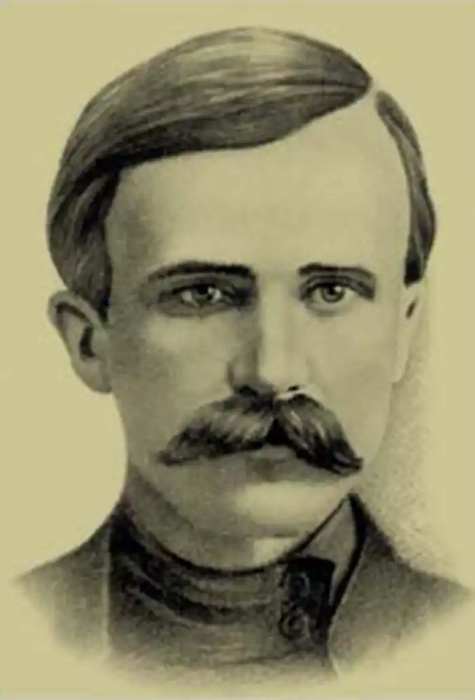
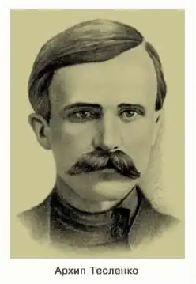
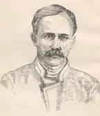
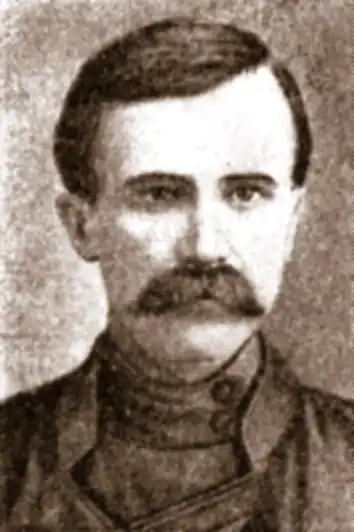

Архип Тесленко
(2. ІІІ. 1882 — 28. VІ. 1911)
КРІЗЬ ТЕРНИ Архип Тесленко — одна з найтрагічніших постатей в українській літературі. І не лише тому, що безперестану борсався в тенетах бідняцького глухого села, поневірявся по судах, етапах, тюрмах, засланнях, захворів на туберкульоз, — і прожив коротке життя: усього-то 29 років. А ще й тому, що в силу багатьох об'єктивних і суб'єктивних причин письменник обрав трагічне як засіб естетичного відтворення дійсності. На початку XX століття в своїй творчості він прагнув художньо осягнути процеси, що відбувалися на селі, і відображав у своїх творах стихійний, традиційний наймитський протест проти куркульства і дрібного чиновництва. В нових умовах визвольного руху в трактуванні смислу буття й небуття соціально й естетично письменник виступив у руслі революційної демократії, хоч пошуки ідеалу давалися нелегко. В нескінченних сутичках з соціальною дійсністю, що кінчалися для нього, як правило, поразкою, А. Тесленко дедалі частіше схилявся до думки про страчене життя як протест проти цієї дійсності. Така філософія — наслідок життєвої практики саме наймитського прошарку українського села, який не мав перспективи, представники якого в переважній більшості були приречені на жалюгідне існування, і лише окремі ставали на шлях свідомої боротьби. Класовий конфлікт між багатством і бідністю поглиблювався. Політичні сили фіксували його, але радикальних шляхів виходу із становища не пропонували. До того ж сільська глибинка була відрізана від ідейно-політичних центрів. Цією політичною неграмотністю селян вміло користувалися заможні верстви і сільська старшина. А. Тесленко бере участь у революційних подіях на Лохвиччині. В поліцейських паперах його характеризують як людину крайніх поглядів. Він вірив у неминучість демократичних перетворень, боровся проти чорносотенства, не поділяв поглядів лібералів-народників. Але чому ж тоді ідейна програма А. Тесленка видається на перший погляд обмеженою? Чому життєва позиція більшості його героїв грунтується переважно на судженні: "…для чого так жить?!" і чому такі невиразні мрії його позитивних героїв про "щось гарне, велике"? На початку XX ст. селянська демократія на селі була вже серйозною суспільною силою. Письменник переймається селянським демократизмом, має зв'язки з соціал-демократами, включається в культурно-просвітницьку діяльність, створює театр для селян, розповсюджує політичну літературу. Виступи селян проти панської сваволі не були поодинокі. Вони стоголосою луною розкочувалися з краю в край, будили думку, гуртували селян до організованої боротьби за волю, проти самодержавства. Йшов 1905 рік. В села проникало слово соціал-демократів. Воно було близьким наймитству. Але певно, що були села, особливо в глибинках, де ідіотизм селянського буття був надто законсервований, де протест був мовчазний, а на ділі "ні слова, ні півслова", де люди приречені "страждати і боятися смерті, скиглити, хапатися за поли життю, аби тільки жити, не знаючи для чого і нащо..." Значення творчості Архипа Тесленка полягає в тому, що він надзвичайно проникливо відобразив ідіотизм сільського життя, трагедію класового розшарування, поривання передових селян до чогось кращого, а це краще — мрії про землю, волю, демократію і освіту. Значення в тому, що письменник поставив собі за мету показати трагізм наймитства. "Немилосердное небо судило родиться мне в заглохшей сельской глуши, от не видавших света стебельков, — напитаться их хладными, черными соками и отчуждаться от всего живого, ведущего к цели жизни — к плодотворности. Врученная мне проказница-судьба не дает ни малейшего проблеска света. Все кроет, заволакивает глаза тучами непроницаемой мглы и определила быть мне подножием величности безумной, внимать и преклоняться перед бессмысленными капризами заносчивых себялюбцев", — писав 1900 року А. Тесленко в примітці до свого першого вірша. А через десять років у одному з листів про оповідання, які надіслав до "Ради", письменник пише: "Обоє на теми, які мене цікавлять, — нікчемність буття". Трагічним було життя самого письменника, і це, безперечно, відбилося на його творах. Чи не в цьому ключ до пізнання ідейно-естетичних пошуків Архипа Тесленка? Лохвиччина — батьківщина Архипа Юхимовича Тесленка. Тут народився він 18 лютого 1882 року в селі Харківцях. Звідси його майбутні герої: наймити, селяни, писарчуки, вчителі, шукачі правди. Картини природи теж звідси: убогі хати, долини, гаї, вигони. Тут він черпав і соціальні конфлікти. На цих землях складалася філософська й естетична концепція письменника. А. Тесленко обрав для художнього дослідження тих, хто в наймах родився, у наймах ріс, у наймах і батьків поховав. "Я з тринадцяти літ у найми пішла" ("Хуторяночка"). Іншого шляху дітям сільської бідноти немає. "Плач не плач, а нічого не поможеться... наймайсь та й нас будеш піддержувать" ("У городі"). Наймити — це люди, позбавлені будь-яких засобів на існування. Це люди, які продають свої руки, щоб мати шматок хліба. Не найнявшись, вони знову змушені повертатися до своїх нетоплених домівок, до голодних дітей. "Чим ти годуватимеш дітей тих?.. Що ти за батько такий?" ("За пашпортом"). "Ну, годувать їх, зодягать треба... а чим?" ("Дід Омелько"), "Хіба ж хто повірить, що ти тільки раз учора годувала дитинку скориночками?.." ("Наука"). Доля наймитських дітей особливо трагічна. "Та старшеньких було семеро, та усі ж і на тім світі... з татусем" ("У схимника"), "Скільки вони вже діток поховали, повиряджали на той світ!" ("Поганяй до ями!"). Зрідка кому з наймитських дітей щастило на якийсь час потрапити до школи. Тих учнів, хто докопувався до всього, цікавився, хотів знати більше, ніж давала школа, виключали. Виключали також за мудрствування: "...плевелів нам у пшениці не треба" ("Поганяй до ями!"), за те, що "розсуждав, залазив у єресь" ("Немає матусі!"). Інші через нестатки школу кидали. Класичним на тему школи є оповідання "Школяр". Обдарований Микола жадібно тягнеться до навчання. Та саме через школу конфлікт вдома. "Школа... школа — здирство, школа — грабіж... Школа останню сорочку стягне з тебе". Миколка змушений кинути школу і водити старців, бо "їсти нічого, топить нічим, удягтися... Так мене в поводаторі це..." Чи є якісь в житті дороги наймитам? Є. Тесленко їх простежує. Одна з них — заробітчанська. Полишає людина своє село і наймається по господарствах, по економіях. Заробітки! Це — "оди-чавіть, пірнуть у темряві, у багнюці" ("Поганяй до ями!"). Багато з них у наймах поповнювали лави безробітних, старців, здобували собі хвороби, годували блощиць у нічліжках. Як правило, кінчали життя вони самогубством. Багато самогубств у творах А. Тесленка, починаючи з першого — неопублікованої п'єси "Не стоїть жить". "Поганяй до ями!", "І це зветься життям!", "Ех, життя, чорти б забрали тебе!", "Ех, не для мене цей світ, не для мене..." — так часто думають герої оповідань. Друга дорога — пошуки правди, дорога складніша, небезпечніша. На цій дорозі письменник бачить писарчуків, сільських вчителів, молодих людей, виключених із шкіл і семінарій. Суспільні погляди кожного з них окремо — невиразні. Але всі вони разом створюють колективний портрет розбурханого суспільними рухами села. Героя оповідання "Поганяй до ями!" виключили із школи за те, що в Бога не вірив і "до віри докопувавсь". А що книги читав, заступавсь за людей, то його оголошують бунтівником, "демократом, забастовщиком" і засуджують. Дорога в нього одна — до ями. Така ж доля героя оповідання "Немає матусі". В оповіданні "Прощай, життя!" кінчає з життям учитель, якого звільнили з роботи і оголосили неблагонадійним. Більш повно окреслено характери протестантів у творах "Истинно русский человек" і в "В пазурах у людини". Поява на селі нової, демократичної інтелігенції пов'язана з революційними подіями 1905 року. Такою є вчителька Оленка з повісті "Страчене життя". У змаганнях з місцевими багачами, "ситими, тупими", зламалася її ідея працювати для народу, зламалася й вона сама. Не лише окремих представників чиновництва, духівництва розвінчує письменник. Він викриває інституції: волосну старшину, сільські школи, монастирі, суди, поліцейські установи, земські зібрання, казенні палати, постоялі доми, канцелярії, тюрми, церкви, Думу — все, де не знаходить трудяща людина захисту. Саме в цьому широта програми А. Тесленка. В листі до редактора журналу "Нова громада" (1905р.) А. Тесленко захоплено переказує рішення селянського сходу: "А наше село яку штуку вдрало — приговор зробило ось який: "Мы, нижеподписавшиеся крестьяне и казаки с. Харьковец, быв сего 4 декабря на сельском сходе... постановили... голодного и обездоленного народа... нельзя накормить, просветить и упокоить штыками, пулями и нагайками... лишить народа полученных им свобод стремятся те, кто все время угнетал и угнетает народ... мы постановляем требовать немедленной отмены усиленной охраны во всей губернии, иначе спокойствия не будет и пролитая кровь падет на головы тех, кто усиленную охрану вызвал". Приговор викликаний вірою селян в царський маніфест 17 жовтня. Ідеали приговору — це ідеали А. Тесленка. Червоні світанки осяювали 1905 рік, селянські маси хвилювалися, повставали. На цей час у Тесленка вже склалась рукописна збірочка з п'яти оповідань — "Хуторяночка", "За пашпортом", "Маруся", "Мати", "Дід Омелько", — він повіз її до Києва. "Киевская старина", куди звернувся він, відхилила перші твори письменника, і вони були передані журналу "Нова громада", а розчарований автор повертається в Харківці. Тут його заарештовують за поширення літератури, сидить він у лохвицькій тюрмі. Вина не була доказана, і його випускають на волю. "Не знаю, де моя воля й до вечора буде", — писав А. Тесленко в листі до Грінченків влітку 1906 року. Місцеві багатії встановили за Тесленком постійний нагляд, влаштовували обшуки, нацьковували селян і навіть рідного батька на бунтівника. Рух селян поширювався, організаційно міцнів — в гущі його був А. Теслекко. В грудні 1905 року у Лохвиці вибухнуло селянське повстання, яке зазнало поразки. Почалися масові арешти зачинщиків і підозрілих. А. Тесленко без паспорта і грошей тікає до Києва, де переховується по монастирях і нічліжках.